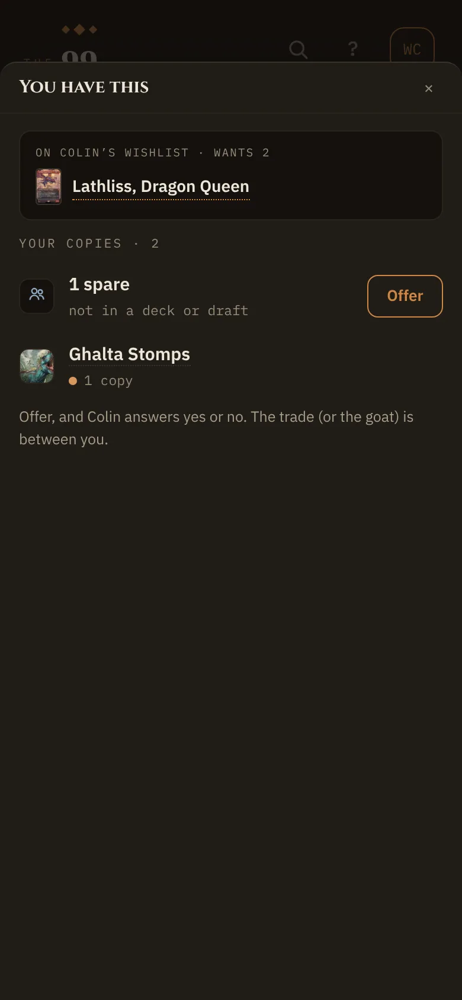
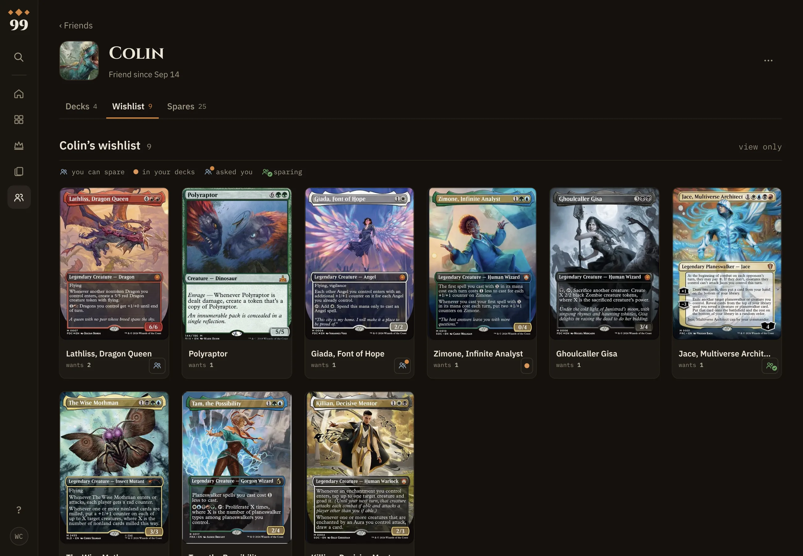

You have a card a friend wants · R1
The mirror of #3202. There, your Wishlist tile shows a friend's spare and opens Ask. Here, a friend's Wishlist tab shows which of their wanted cards you have, and the press opens your copies with Offer. Nothing changes on your own collection or wishlist. Drawn over the shipped friend page and /friends, rendered from main f17ab2a; new parts are built from shipped components (the #3202 tile press, the spares modal, Waiting on you's row and Yes/No). Friends are Colin and Max; art is from other handoffs, counts are placeholders.
1 · A friend's wishlist marks the cards you have
- The #3202 press, on a friend's tile: the outlined 26px box over the caption's lower right, 44px hit on touch, the tile press's sibling. Tiles with nothing of yours draw nothing, no slot.
- You can spare it: the spare glyph in fact ink. A spare by your own rule (Settings › Spares: the threshold and Keep), the same copies a friend's Spares tab would show, whether or not your spares are shared with Colin.
- It's in your decks: the shipped committed ownership dot. Every copy is in a deck or draft (or kept back), so it is yours but not a spare.
- The spare glyph takes the spare request marks: accent dot while an ask or offer between you is open (asked you, offered), green tick once it's agreed (sparing).
- A key line under the head names only what the tiles draw: you can spare · in your decks · asked you · sparing.
- Loading: the tab draws as shipped; one read of your copies for the list's cards lands after it and the presses fade in (160ms, none under reduced motion). A failed read draws nothing.
2 · The press opens your copies
- The shipped spares modal's shell (640 on desktop, the sheet on the phone), titled You have this. The card box's kicker: on Colin’s wishlist · wants 2.
- Your copies · N: a spare row with one Offer, then a row per deck holding a copy (its commander's art, its name linking to the deck, the committed dot and the count).
- After Offer the row reads Offered with the days left; after Colin's yes, Sparing in green; after a no, Declined.
- Colin already asked you: no Offer. The row is their ask, with the same Yes, No and days left as Waiting on you, so you can answer where you noticed it.
- Only in decks: no press. The foot says every copy is in a deck, so it isn't a spare.
3 · Offer is Ask in reverse
- One press, no note, for the copies Colin still wants (capped at your spares). The same rules as an ask: one open per card between two people, 14 days, then it expires; Your requests' ✕ withdraws it.
- Colin gets a Waiting on you row, Spare offer: Max can spare you Lathliss / Max has 1 spare. You want 2. with Yes and No, and Home's lead story and push as an ask's.
- Their Yes is an accepted request on their side (Your requests: Max can spare Lathliss; their own tile's spare press ticks green). The handover stays between you, and nobody's collection changes until they change it.
- Offering tells Colin you have it even when your spares aren't shared with their pods: the press is yours, so that's on purpose.

The press on a friend's tile
Spare · none · spare Colin asked for.

The sheet
Lathliss: 1 spare, 1 in Ghalta Stomps.

Desktop
Colin's wishlist with your marks.
Q1 · Show copies that are only in your decks?
Recommended: show the dot, with no Offer (Wishlist board, F1 and F5).
Q2 · Offer, or just the marker?
Recommended: Offer (Sheet board, F2 to F4, and Friend side).
Q3 · Which extras, if any? (Ideas board)
Recommended: A and B. Hold C: a new notice kind is more noise than this needs, and B already leads you to the page.